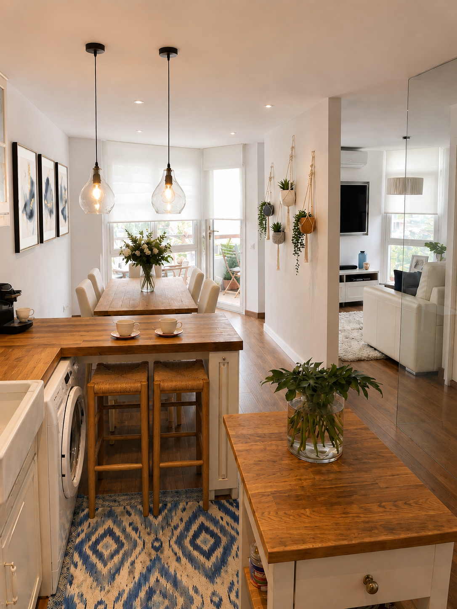
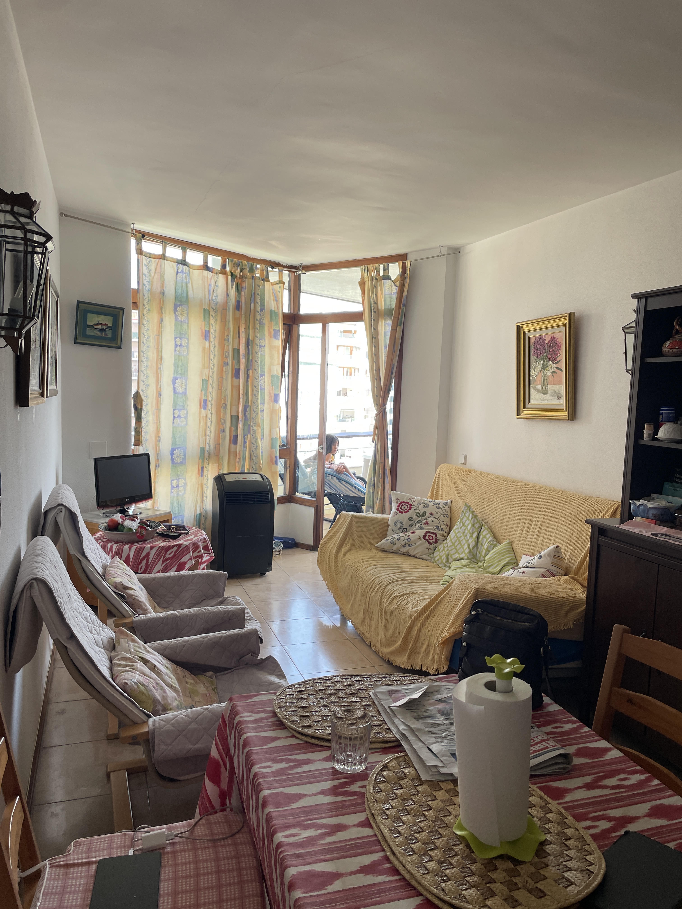
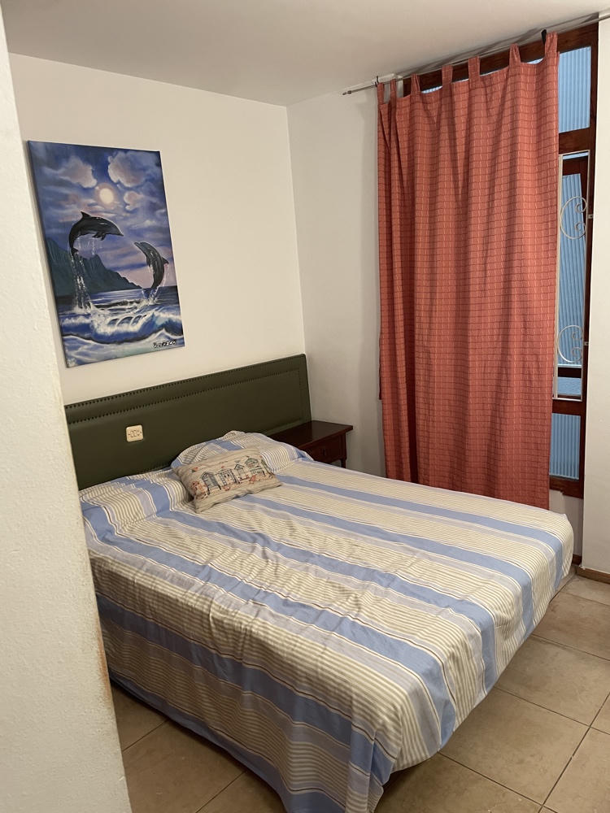
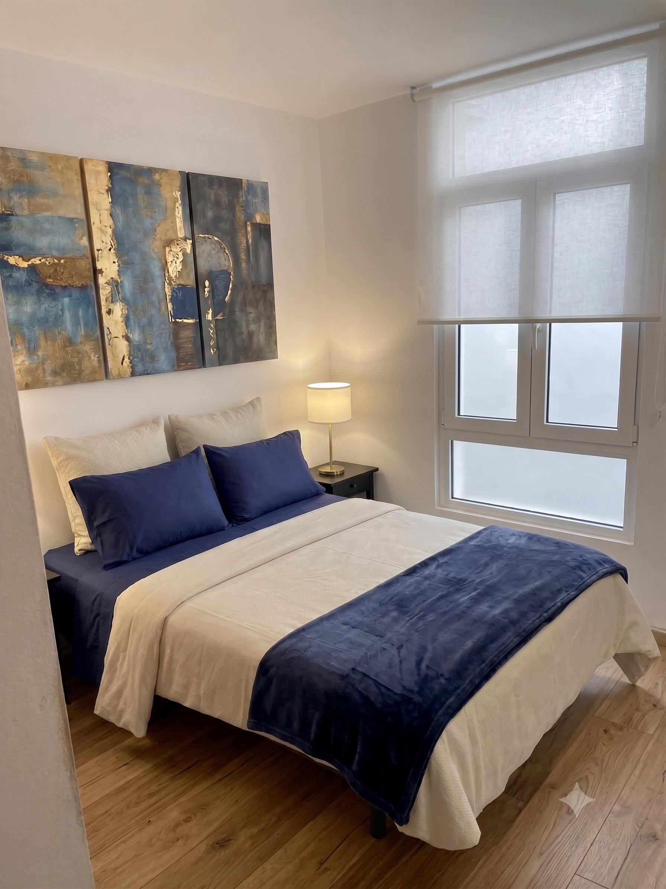
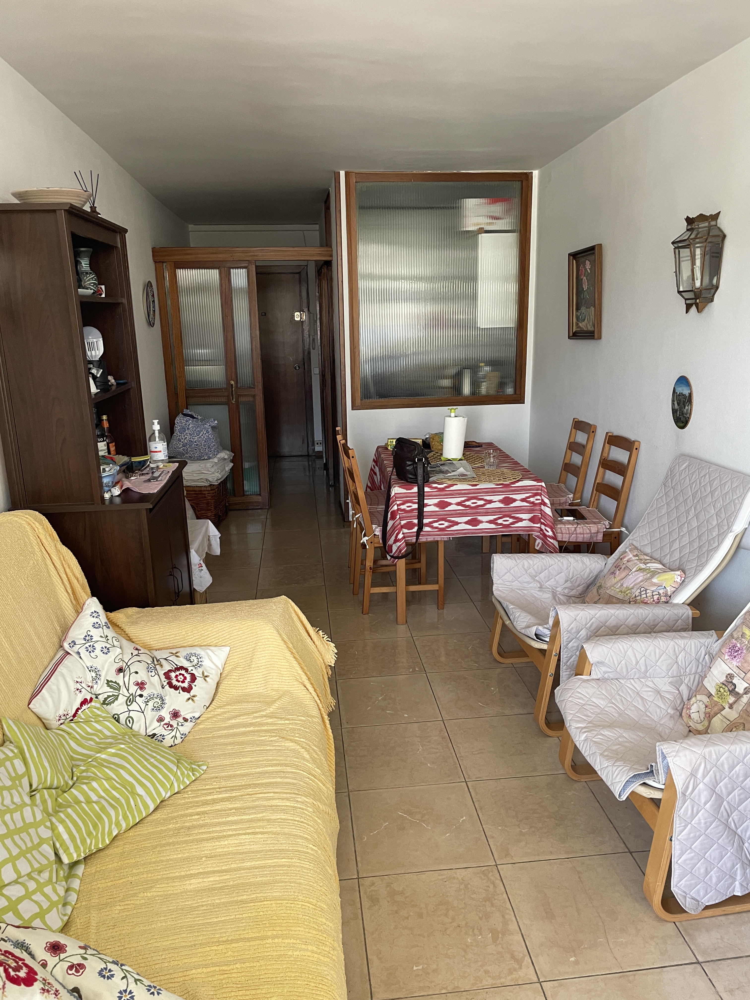
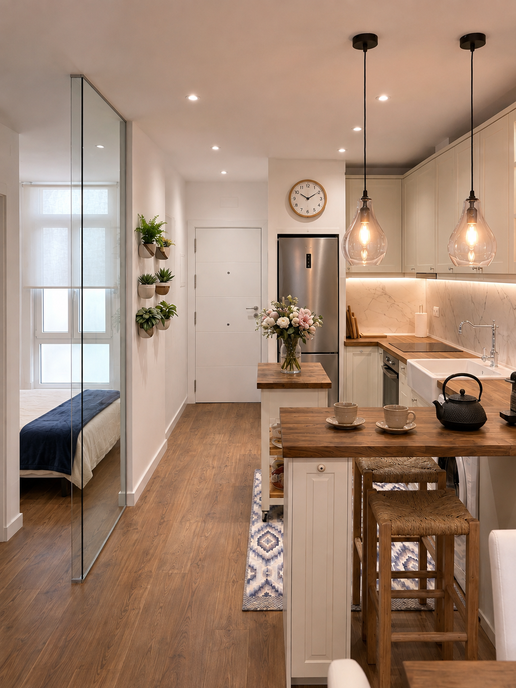
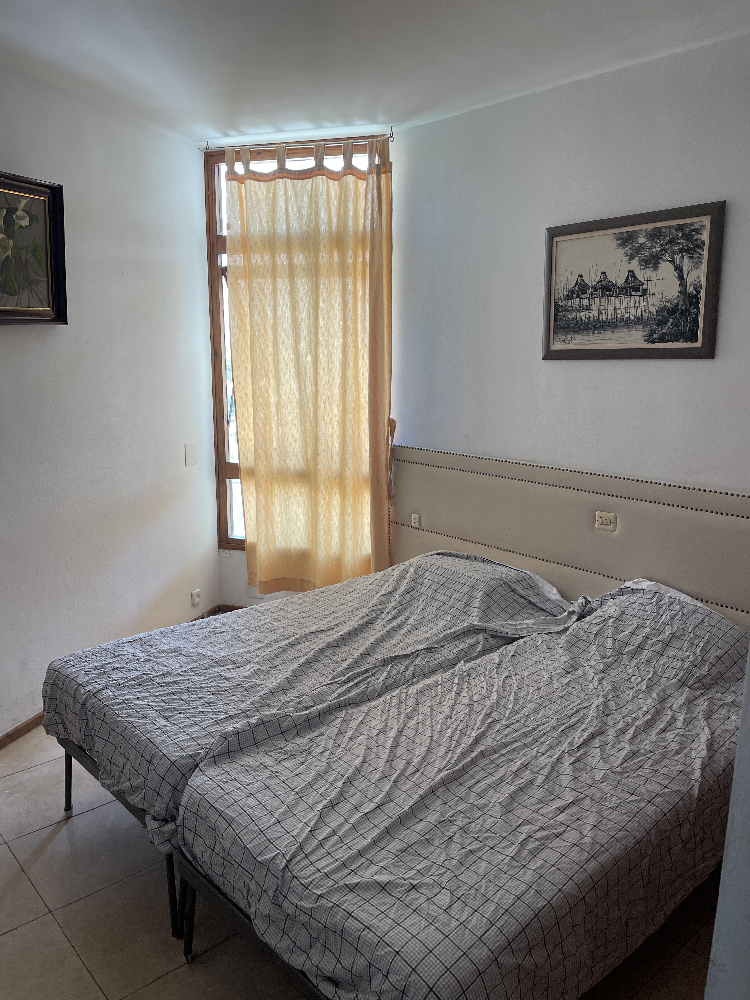
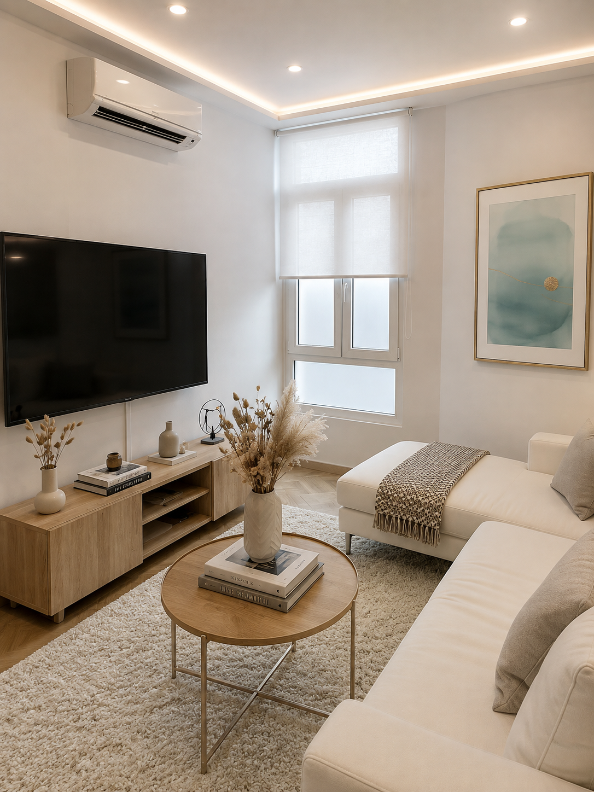
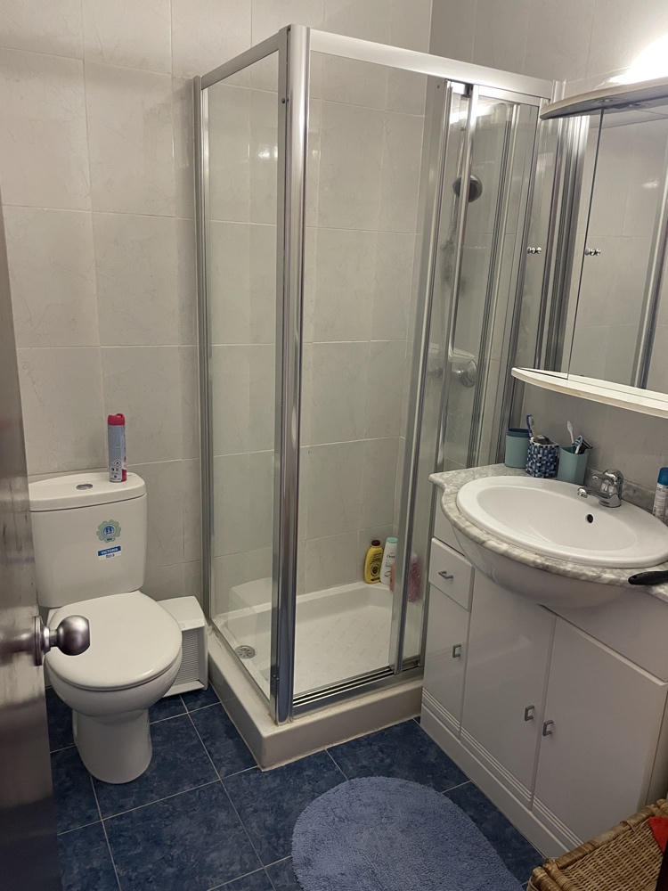
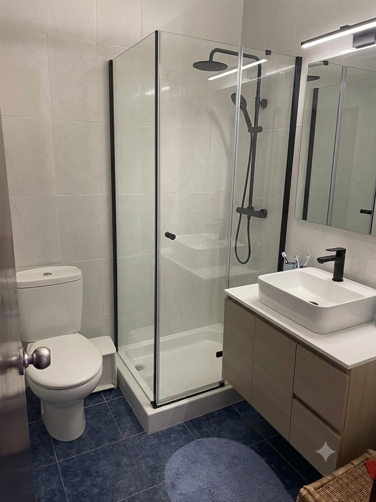

Proyecto · Reforma integral · Agosto 2026
Propuesta de reforma integral
Memoria visual de redistribución, mejora funcional y renovación interior
Una propuesta pensada para mejorar la funcionalidad, la luz, la estética y el valor de la vivienda.

Reforma integral de vivienda
Sala comedor
Comparativa antes / después

Desliza para comparar · Usa las flechas del teclado para ajustar
Cambios propuestos
- Ventanas Climalit con marco blanco y estores enrollables.
- Nueva zona de comedor y encimera lateral con barra.
- Apertura parcial del tabique hacia la nueva sala.
- Falso techo rebajado 15 cm con iluminación LED.
- Suelo laminado continuo en toda la vivienda.
Objetivo del cambio
Conseguir un espacio mucho más luminoso, moderno y funcional, mejorando la sensación de amplitud y la circulación entre cocina, comedor y sala.
Beneficios
- Mayor entrada de luz natural.
- Mejor aprovechamiento del espacio.
- Imagen contemporánea y acogedora.
- Más confort y funcionalidad.
- Revalorización de la vivienda.
Características clave
- VentanasClimalit blanco
- EstoresBlancos screen
- Encimera y barraMadera natural
- AperturaConexión visual
- IluminaciónLED integrada
- SueloLaminado cálido
Reforma integral de vivienda
Habitación
Comparativa antes / después


Desliza para comparar · Usa las flechas del teclado para ajustar
Cambios propuestos
- Sustitución completa del mobiliario.
- Carpinterías Climalit de aluminio blanco.
- Renovación de las puertas del armario.
- Suelo laminado continuo en toda la vivienda.
- Falso techo rebajado 15 cm con iluminación LED.
- Instalación de cuatro enchufes estratégicos.
Objetivo del cambio
Modernizar la habitación para crear un ambiente luminoso, funcional y confortable, manteniendo la continuidad estética con el resto de la vivienda.
Beneficios
- Mayor luminosidad.
- Imagen moderna y elegante.
- Continuidad visual de la vivienda.
- Mejor confort diario.
- Mayor eficiencia y funcionalidad.
Características clave
- VentanasClimalit blanco
- ArmarioPuertas renovadas
- TechoRebajado 15 cm
- IluminaciónLED integrada
- Enchufes4 puntos nuevos
- SueloLaminado cálido
Reforma integral de vivienda
Cocina
Comparativa antes / después


Desliza para comparar · Usa las flechas del teclado para ajustar
Cambios propuestos
- Demolición de paredes para abrir e integrar la cocina.
- Nuevo mobiliario, encimera y barra auxiliar.
- Muebles altos con iluminación LED integrada.
- Nevera nueva con termo oculto sobre el mueble.
- Horno, vitrocerámica, lavadora y fregadero nuevos.
- Nuevo revestimiento cerámico y puerta de seguridad.
Objetivo del cambio
Crear una cocina abierta, luminosa y totalmente integrada con la vivienda, optimizando el espacio, la circulación y la funcionalidad.
Beneficios
- Más amplitud visual.
- Más luz natural.
- Mejor circulación.
- Más almacenamiento.
- Imagen contemporánea.
Características clave
- CocinaDistribución abierta
- MobiliarioCon LED superior
- NeveraTermo oculto
- EquipamientoHorno y vitro
- VidrioAporta luminosidad
- EntradaPuerta seguridad
Reforma integral de vivienda
Sala
Comparativa antes / después


Desliza para comparar · Usa las flechas del teclado para ajustar
Cambios propuestos
- Reducción parcial del tabique hacia el comedor.
- Instalación de aire acondicionado tipo split.
- Carpinterías Climalit de aluminio blanco y estor.
- Falso techo rebajado 15 cm con iluminación LED.
- Suelo laminado continuo con el resto de la vivienda.
- Sofá cama, mueble de TV y televisión LED.
Objetivo del cambio
Transformar la antigua habitación en una sala de estar luminosa, confortable y versátil, integrada visualmente con el comedor y adaptada al uso diario.
Beneficios
- Espacio multifuncional.
- Mayor luminosidad.
- Continuidad estética.
- Mejor confort térmico.
- Imagen contemporánea.
Características clave
- AperturaHacia comedor
- ClimatizaciónAire acondicionado
- VentanasClimalit blanco
- IluminaciónLED integrada
- Sofá camaUso polivalente
- TVMobiliario nuevo
Reforma integral de vivienda
Baño
Comparativa antes / después


Desliza para comparar · Usa las flechas del teclado para ajustar
Cambios propuestos
- Sustitución de mampara y plato de ducha.
- Renovación completa de la grifería.
- Instalación de un nuevo espejo.
- Renovación de la iluminación.
- Sustitución del mueble de baño.
- Instalación de un nuevo lavabo.
Objetivo del cambio
Actualizar el baño para conseguir una imagen más actual, mejorar su funcionalidad diaria y aportar una estética más limpia, luminosa y ordenada.
Beneficios
- Imagen más moderna.
- Mayor sensación de orden.
- Mejor funcionalidad diaria.
- Acabado limpio y actual.
- Revalorización de la vivienda.
Características clave
- MamparaVidrio renovado
- DuchaPlato nuevo
- GriferíaAcabado negro
- EspejoFormato actualizado
- IluminaciónLuz de espejo
- MuebleLavabo renovado
Página 07
Presupuesto preliminar
Resumen económico de la reforma integral
| Estancia | Actuación principal | Importe |
|---|---|---|
| 01 · Sala comedor | Redistribución, apertura de espacios, carpinterías, techo, iluminación y suelo | € |
| 02 · Habitación | Carpinterías, armario, falso techo, iluminación, enchufes, suelo y mobiliario | € |
| 03 · Cocina | Demoliciones, mobiliario, equipamiento, cerámicos, vidrio y puerta de seguridad | € |
| 04 · Sala | Apertura parcial, climatización, carpinterías, iluminación, suelo y equipamiento | € |
| 05 · Baño | Mampara, plato de ducha, grifería, espejo, iluminación, mueble y lavabo | € |
| Partidas generales | Electricidad integral, techos, suelo laminado, pintura, residuos y limpieza | € |